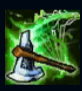
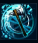
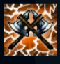
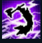
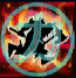

Olaf
| The Berserker | |
|---|---|
| Release date | 09.06.2010 |
| Class | Diver |
| Positions | Jungle,Top |
| Resource | Mana |
| Range type | Melee |
| Adaptive type | Physical |
| Base statistics | |||
| Health | 597 – 2178 | Mana | 315.6 – 1029.6 |
| Health regen. | 8.5 – 23.8 |
Mana regen. | 7.465 – 17.24 |
| Armor | 35 – 86 | Attack damage | 68 – 127.5 |
| Magic resist. | 32 – 53.25 | Crit. damage | 175% |
| Move. speed | 350 | Attack range | 125 |
Olaf este o forță distructivă de neoprit, mânuindu-și toporul cu o singură dorință: moartea într-o luptă glorioasă. Provine din peninsula Lokfar din Freljord și, demult, i s-a profețit că va muri pașnic – o soartă de laș și o mare insultă pentru cineva din poporul lui. Căutând moartea și lăsându-se mânat de furie, s-a dezlănțuit în tot nordul, ucigând nenumărați războinici și multe bestii legendare în încercarea de a găsi un adversar care să-i ofere un sfârșit onorabil. Acum luptă cu îndârjire pentru Gheara iernii și-și caută moartea glorioasă în marile războaie ce vor urma. |  |
BERSERKER TURBAT Viteza de atac a lui Olaf crește cu 1% pentru fiecare 1% din viața lipsă |
||
|---|---|---|---|---|
 |
SECURE ZBURATOARE Olaf aruncă o secure și o înfige în pământ într-o locație-țintă, provocându-le daune inamicilor prin care trece arma și reducându-le viteza de mișcare. Dacă Olaf ridică securea, timpul de reactivare al abilității se reduce cu 4,5 secunde. |
|||
 |
LOVITURI FEROCE Furtul de viață, vindecarea din toate sursele și viteza de atac ale lui Olaf cresc în funcție de nivelul de viață lipsă. |
|||
|  |
AVANT NESABUIT Olaf atacă cu atâta forță încât provoacă daune reale țintei și lui însuși, recuperându-și viața consumată dacă distruge ținta. |
|||
 |
RAGNAROK Olaf devine temporar imun la neutralizări. |